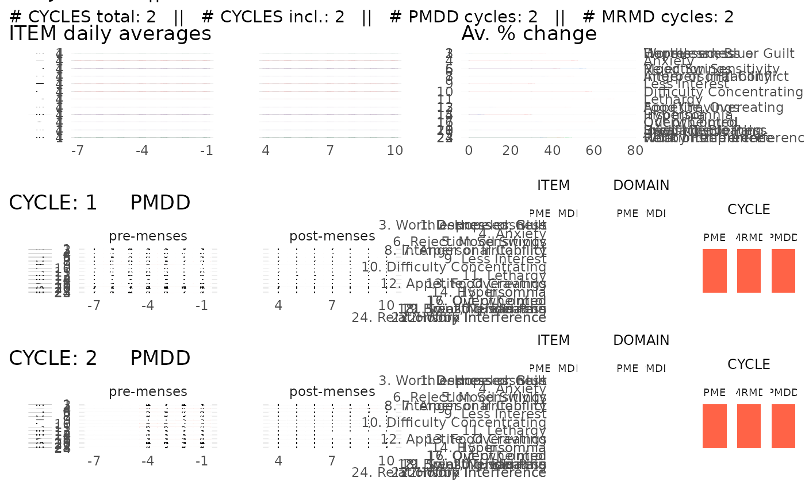

Visualize all the observations and the diagnosis summary of a single subject.
plot_subject_data_and_dx.RdBy default, this function saves the visualization in a pdf. The pdf heigth scales with the number of cycles reported for the subject.
Usage
plot_subject_data_and_dx(
data = data.frame(),
save_as_pdf = TRUE,
pdf_path = "",
pdf_name = "",
color_max_score = "tomato",
color_summary = c("complementary", "rainbow")
)Arguments
- data
a
cpassdata.frame that contains the symptoms reported by ONE subject.- save_as_pdf
logical. If
TRUE(default), this function saves the visualization in a pdf. The pdf path and name can be specified with the argumentspdf_pathandpdf_name. IfFALSE, this function returns a ggplot object. The same object is also returned, but invisibly, whensave_as_pdf = TRUE(see examples).- pdf_path
string. Specifies the path to the folder in which the pdf should be saved. By default, the path is an empty string so the pdf is be saved in the current working directory.
- pdf_name
string. Specifies the name of the pdf. By default, the name of the pdf is
CPASS_SUBJECT_X.pdf, whereXis replaced by the subject unique identifier.- color_max_score
string specifying the color of a score of 6 (the maximal score) reported by a subject. Any standard color format specification is accepted, i.e. one of the R built-in color names (e.g. "tomato" (default); type
colors()to see the names of all R built-in colors), an RGB hex code (e.g. "#AA2199") or a color specified via one of the color/palette functions (e.g. hsv(0.1,0.9,0.9))- color_summary
string. Either
"complementary"(default) or"rainbow"specifying the type of color scheme for the ITEM items in the diagnosis summary. If"complementary", the colors are chosen complementary within a domain; if"rainbow", the item colors are different for each item and chosen from a rainbow palette.
Value
a ggplot object if save_as_pdf = FALSE.
The same object is returned invisibly by default
(save_as_pdf = TRUE).
Examples
library(magrittr)
library(dplyr)
data(PMDD_data)
input =
PMDD_data %>%
dplyr::filter(subject == 2) %>%
as_cpass_data(., sep_event = "menses")
#> Number of subjects: 1
#> Total number of cycles: 2
#> Percentage of missing scores: 13.1 %
#> Warning: The 'phase' column will be over-written
#> Percentage of missing scores
#> (in pre- & post-menstrual phases): 13.1 %
p <- plot_subject_data_and_dx(data = input)
#> Subject summary saved in ' /home/runner/work/cpass/cpass/docs/reference/CPASS_SUBJECT_2.pdf '
p
